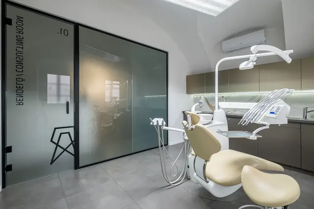
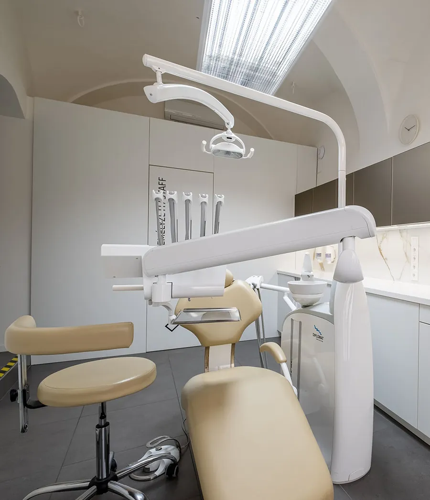
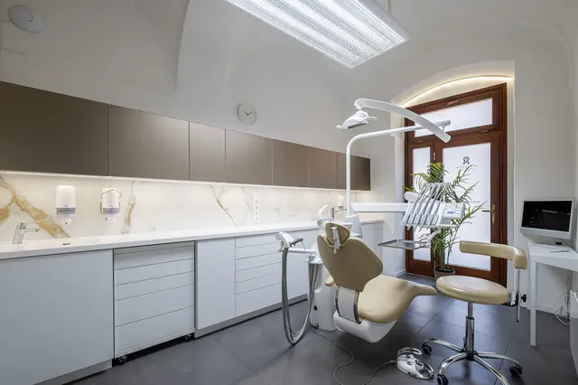
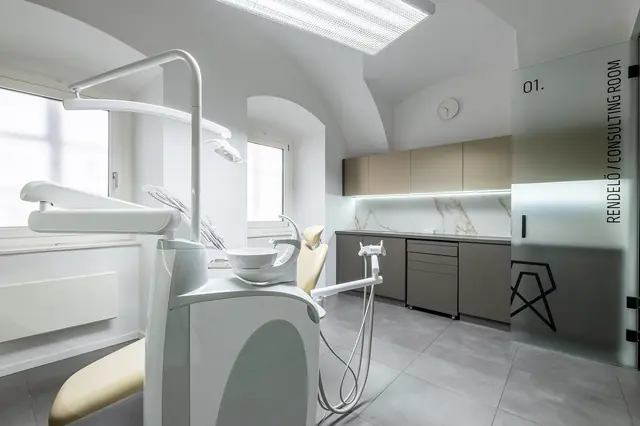
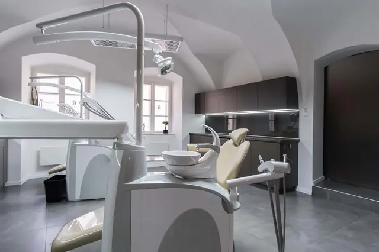

Fogszabályozás
Szép, egyenes fogsor gyerekkorban és felnőttként is.
- Fogszabályozás
- Láthatatlan fogszabályozás
- Mosolytervezés
Stílus a mosolyban
Fogszabályozás, szájsebészet, gyermekfogászat és parodontológia szakorvosoktól, a Ferencesek utcájában – gyerekeknek és felnőtteknek.
4,7 · 81 Google-vélemény

Rendelőnkben minden szakterületnek saját szakorvosa van. Válassza ki, mivel jönne, és megmutatjuk, ki foglalkozik vele.
Válasszon egyet:
A megelőzéstől a mosolytervezésig – átfogó kezelések minden korosztály számára, a legmodernebb anyagokkal és technikákkal.

Szép, egyenes fogsor gyerekkorban és felnőttként is.

Szakorvosi beavatkozások nyugodt, gondos kézben.

Ami a fogak egészségét hosszú távon megőrzi.

Hidak, koronák és egy ragyogóbb mosoly.
A legmodernebb anyagokkal és technikákkal dolgozunk, és rendelőnket uniós pályázati támogatással is folyamatosan fejlesztjük.
Szinte mindannyian a pécsi egyetemi klinikákon is gyógyítunk, oktatunk és kutatunk. Kattintson egy névre, és megismerheti, ki dolgozik majd Önnel.
Orvosaink
Asszisztencia és recepció
„Segítőkészek, kedvesek, precízek! Gyorsan kap az ember időpontot, és ár-érték arányban is teljesen korrektek!”Google-vélemény, ★★★★★
Két gyermekünk fogszabályozása miatt jártunk ide Kaposvárról: „a gyerekek imádtak ide járni, semmi félelem” – megérte a fáradtságot.Google-vélemény, ★★★★★
„Abszolút szuperlatívuszokban tudok csak nyilatkozni az FK Dental csapatáról.” – írta egy páciens, aki tartott a fogorvostól. „Megvan az új kedvenc helyem!”Google-vélemény, ★★★★★
4,7 átlag 81 vélemény alapján · Vélemények a Google-on
Online kérhet időpontot bármelyik szakrendelésünkre. Adja meg adatait, és kollégánk felhívja Önt a megfelelő konzultációs időpont egyeztetése céljából.
Ha nem találja a választ, hívjon minket: +36 30 660 5967.
Telefonon a +36 30 660 5967-es számon, vagy online: adja meg nevét és telefonszámát, és kollégánk felhívja Önt a megfelelő konzultációs időpont egyeztetése céljából. Bármelyik szakrendelésünkre kérhet így időpontot.
Igen. Rendelőnkben gyermekfogászat és gyermekkori fogszabályozás is van; két kollégánk szájsebész és gyermekfogszakorvos, és altatásban végzett fogászati ellátással is foglalkozunk.
Fogszabályozással Dr. Frank Dorottya, Dr. Rill Leila és Dr. Niklai Réka, szájsebészettel és implantátummal Dr. Kolarovszki Béla, Dr. Stáczer Nóra és Dr. Katona Krisztián, fogíny- és fogágybetegséggel Dr. Schönfeld Bernadett foglalkozik. Ha nem tudja, kihez forduljon, kérjen időpontot, és kollégánk a megfelelő szakorvoshoz egyezteti.
Hétfőtől csütörtökig 8:00–20:00, pénteken 8:00–19:00 között. Szombaton és vasárnap zárva vagyunk.
Pécsen, a Ferencesek utcája 21. szám alatt, a földszint 2-ben.